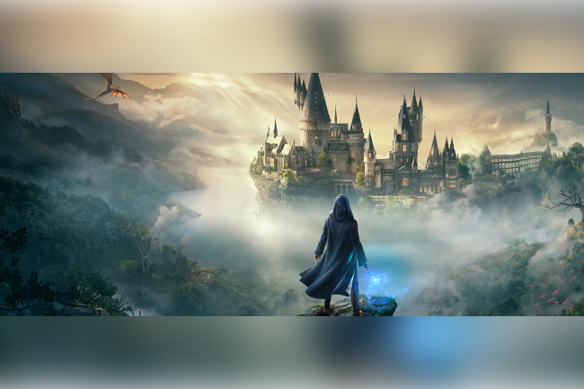

Introduction au Jeu
L'Héritage de Poudlard est un RPG d'action-aventure en monde ouvert qui vous plonge dans l'univers magique de la saga Harry Potter.
Explorez Poudlard comme jamais auparavant, au cœur des années 1800.
Vous incarnez un élève ou une élève doté(e) d'un pouvoir unique, gardien d'un ancien secret capable de bouleverser l'équilibre du monde des sorciers.
Prenez les rênes de votre destin et vivez une aventure captivante où vos choix façonneront votre héritage dans cet univers enchanteur.

Histoire et Contexte
Hogwarts Legacy : L'Héritage de Poudlard vous transporte dans les années 1800, bien avant les événements des livres et films Harry Potter.
Vous incarnez un nouvel élève ou une nouvelle élève rejoignant Poudlard en cinquième année, une situation inhabituelle qui suscite intrigue et curiosité.
Votre personnage n'est pas comme les autres : vous possédez une capacité rare à manipuler une ancienne forme de magie, longtemps oubliée par les sorciers.
Alors que des forces obscures émergent, cherchant à exploiter ce pouvoir pour leurs propres desseins, vous devenez le gardien d'un secret qui pourrait bouleverser le monde magique.
Dans ce contexte, vous devrez jongler entre vos études à Poudlard, où vous apprendrez les sorts, concocterez des potions et explorerez des mystères, et une quête personnelle pour protéger cet héritage magique.
Vous serez confronté à des choix difficiles, des alliances improbables et des ennemis redoutables, tout en découvrant les recoins de Poudlard, Pré-au-Lard, et bien d'autres lieux emblématiques.
L'aventure met l'accent sur la liberté et les décisions : serez-vous un héros défenseur de la magie ou choisirez-vous un chemin plus sombre ? L'histoire est la vôtre, et votre héritage marquera le monde des sorciers.
Fonctionnalités du Jeu
Exploration
Plongez dans un monde magique richement détaillé en explorant des lieux emblématiques tels que Poudlard, avec ses salles de classe, ses couloirs mystérieux et ses secrets cachés.
Aventurez-vous également à Pré-au-Lard pour découvrir ses boutiques pittoresques, ou osez pénétrer dans l'obscurité de la Forêt interdite, peuplée de créatures magiques et de dangers.
Personnalisation
Créez un personnage unique en personnalisant son apparence, en choisissant sa maison à Poudlard (Gryffondor, Serpentard, Poufsouffle ou Serdaigle) et en développant ses compétences magiques.
Façonnez votre sorcier ou sorcière pour qu'il corresponde à votre style de jeu.
Combat et Magie
Apprenez et maîtrisez un large éventail de sorts puissants pour triompher de vos adversaires dans des combats intenses.
Utilisez des combos magiques, des potions et des talents spéciaux pour affronter des sorciers malintentionnés, des créatures dangereuses et des forces obscures.
Quêtes et Histoires
Immergez-vous dans une histoire captivante et prenez part à des quêtes secondaires enrichissantes.
Vos décisions et actions auront des répercussions sur l'histoire et les relations que vous développez avec d'autres personnages.
Chaque choix façonne votre aventure et influence votre héritage.